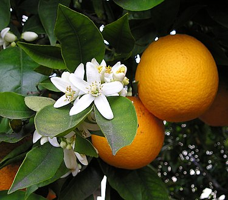

tentangbuah.com
jeruk
Jeruk atau limau adalah semua tumbuhan berbunga anggota marga Citrus dari suku Rutaceae (suku jeruk-jerukan). Anggotanya berbentuk pohon dengan buah yang berdaging dengan rasa masam yang segar, meskipun banyak di antara anggotanya yang memiliki rasa manis. Rasa masam berasal dari kandungan asam sitrat yang memang menjadi terkandung pada semua anggotanya.
Khasiat Jeruk
- Meningkatkan daya memori
- Baik untuk usus
- Meningkatkan sistem kekebalan tubuh
- Baik untuk jantung
- Menurunkan tekanan darah
- Mengurangi risiko diabetes
Daftar Harga
| Jenis Jeruk | Harga | |
|---|---|---|
| Per Kilo | Per Biji | |
| jeruk bali | 50.000 | 5.000 |
| jeruk nipis | 60.000 | 6.000 |
| jeruk purut | 70.000 | 7.000 |
| jeruk jawa | 55.000 | 5.500 |